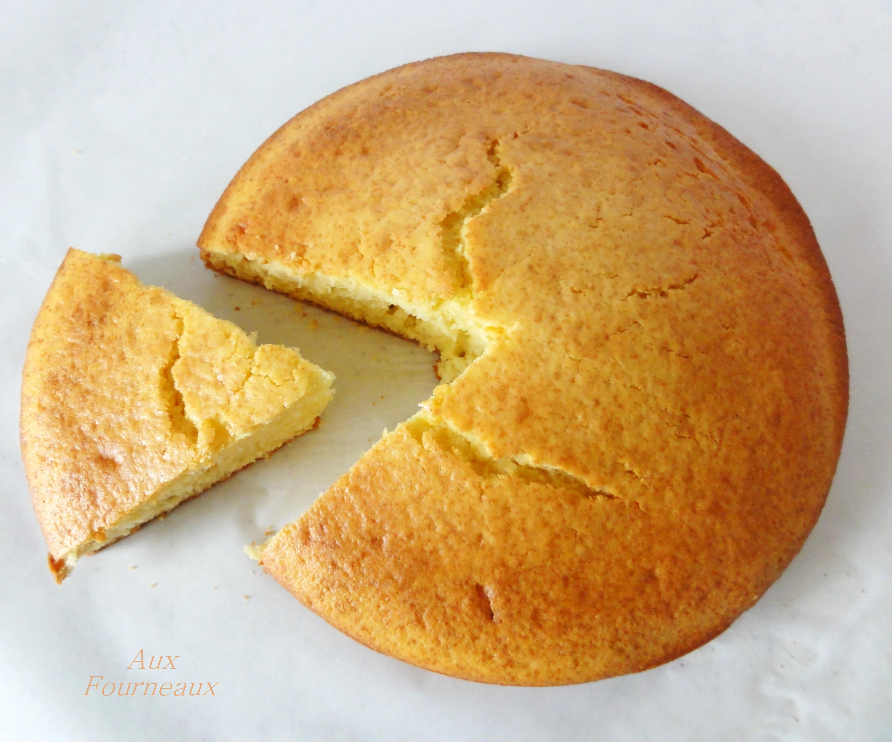

Pour 6 personnes.
La recette inratable pour un délicieux gâteau au yaourt !
Facile à doser : il suffit d' utiliser le pot de yaourt comme unité de mesure pour les autres ingrédients.
Durée totale : 35 minutes
Difficulté : Très Facile
Coût : Pas cher
